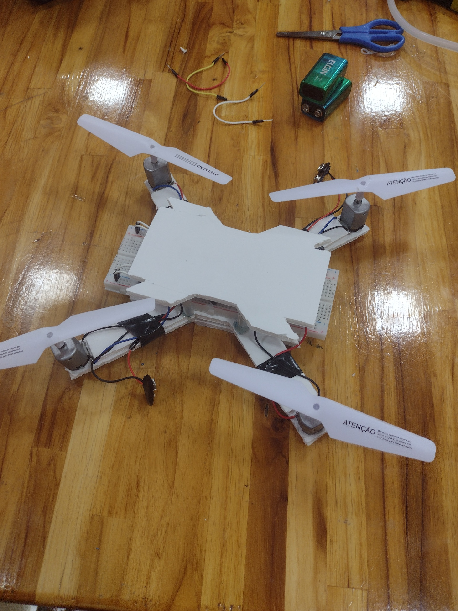

Projetos
Nessa seção apresento um pouco sobre alguns dos projetos que já desenvolvi durante a minha trajetória acadêmica e pessoal.
Cada um deles representa uma oportunidade de aprendizado e aplicação prática de conceitos de programação, lógica e desenvolvimento de sistemas.

Drone com placa photoboard
Esse projeto foi desenvolvido em 2023, durante meu segundo ano do Ensino Médio, no Itinerário de Matemática
e suas Tecnologias (Colégio Maxi). Seu objetivo era construir um drone utilizando componentes eletrônicos e
uma placa protoboard. A atividade envolveu a montagem da estrutura do drone e a integração dos componentes
responsáveis pelo funcionamento do sistema.
Durante o projeto, tive contato com conceitos iniciais de eletrônica e com o funcionamento de sistemas baseados
em microcontroladores, além de desenvolver habilidades de montagem, organização e compreensão da integração entre
diferentes componentes eletrônicos.
O desenvolvimento do projeto exigiu muita dedicação e colaboração entre os alunos, proporcionando diversos aprendizados
ao longo do processo. No final, o resultado alcançado também despertou grande admiração entre os pais e a comunidade escolar.
Conceitos utilizados: protoboard, eletrônica básica, montagem e integração de componentes e noção de sistemas.
Professor orientador: Carlos Henrique Estronioli Duarte.